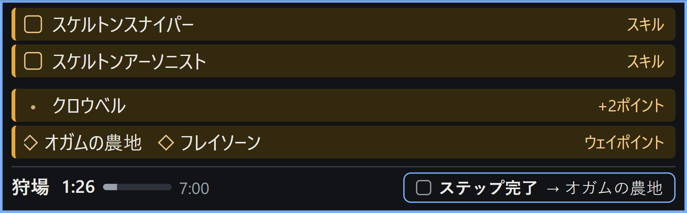
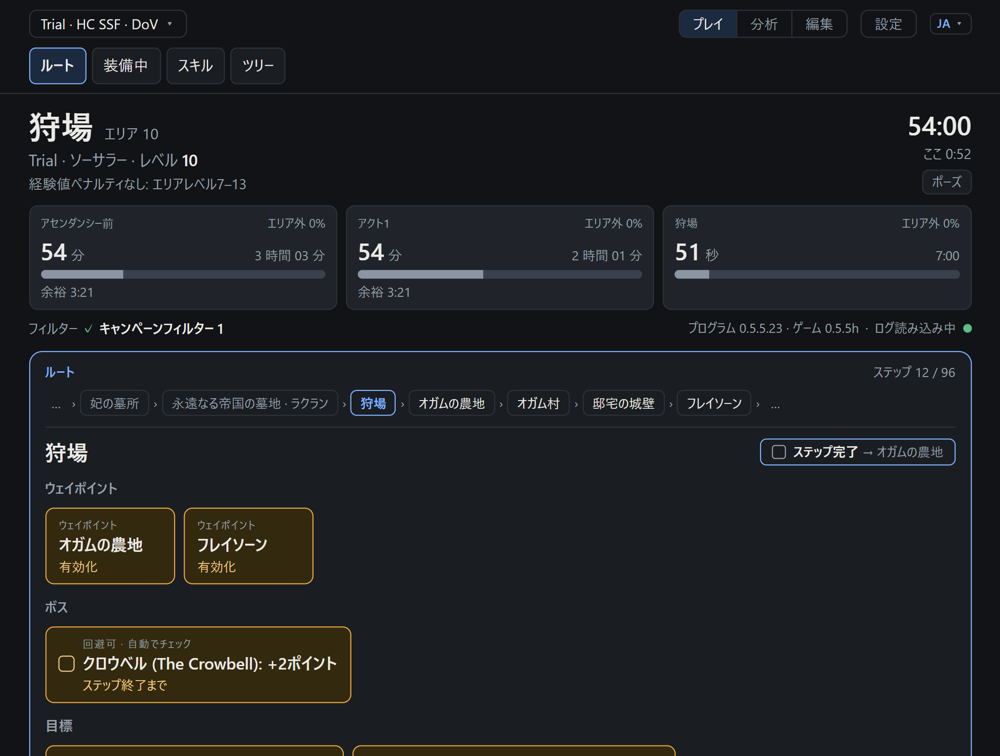
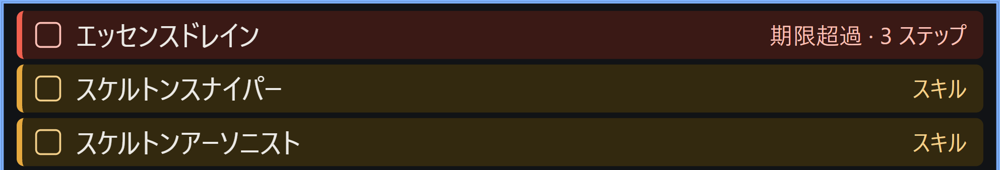
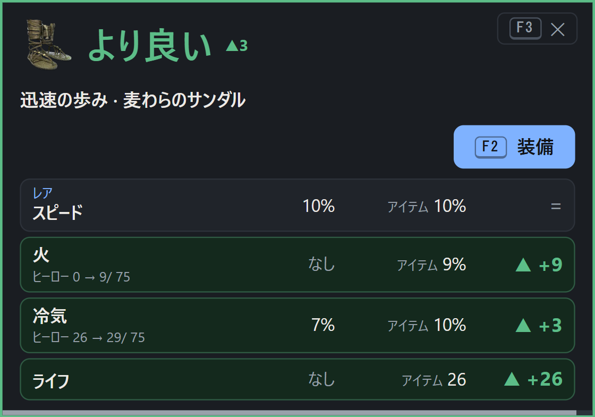
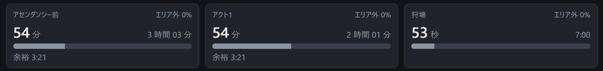
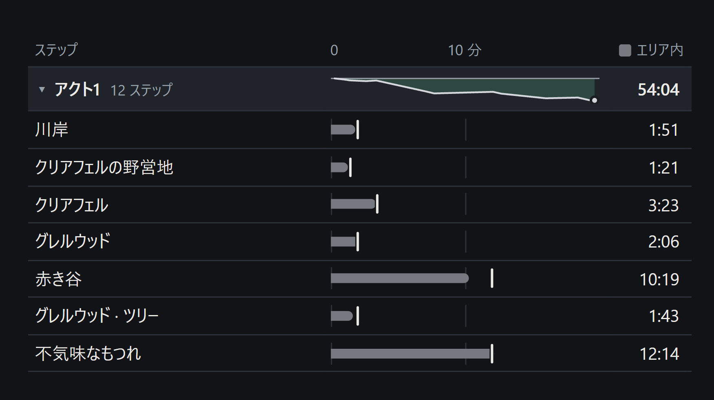
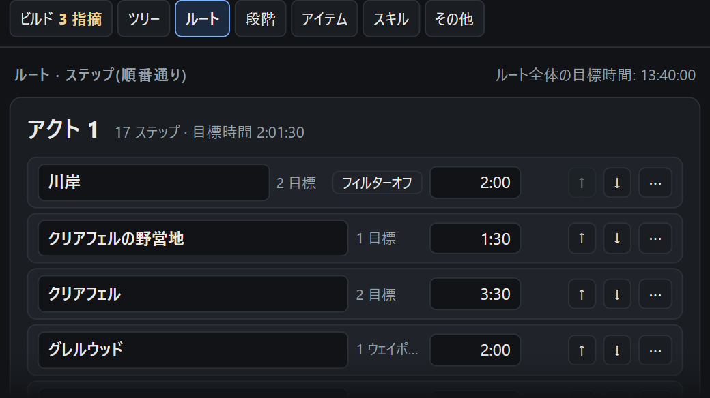

プロ並みにプレイしよう
何百時間もの試行錯誤は、プランの作者がもう済ませてくれています。 Runbook はプランに沿って、各エリアの行き先、倒す敵、取るものを案内します。
最初のバージョンはまだ公開されていません

ただプレイするだけ
エリアに入ると、そこでやることを Runbook がもう表示しています。レベル、報酬、ツリーのノードには、自動でチェックが付きます。

赤い行は消えない
どのステップまでに何を取り、何を装備しておくべきかは、プランの作者が知っています。遅れると、その行は赤くなり、済ませるまで消えません。

装備する？捨てる？
アイテムの上で F2 を押すと、装備中のものより良いか悪いかがわかります。基準は、プランの作者が選んだステータスです。

作者のペースで
どのステップにもアクトにも、プランで決められた時間があります。どこで余裕があり、どこで遅れているかがわかります。

アナリティクス
1分1秒が勝負
プレイが終わったら、「分析」で時間がどこに消えたかがわかります。ステップごと、エリア内、街、ルート外。前のヒーローと比べれば、どこで速くなったかが見えてきます。


より良い手を知っていますか？
自分のプランを作りましょう。キャンペーンは、すべてのエリア、ボス、報酬まで入力済みです。そこにビルドと期限を加えてください。
よくある質問
ガイドならもうあります。なぜ Runbook が必要なのですか？
ガイドは、読んで、覚えて、ゲームと見比べなければなりません。Runbook はあなたと一緒に進みます。今いるエリアを把握し、今やるべきことを表示します。
自分のクラス向けのプランがありません。どうすればいいですか？
プランは、作者が共有するとカタログに並びます。それまでは、自分で作ることもできます。キャンペーンはすでに入力済みなので、あとはビルドを追加するだけです。
パッチが出ました。Runbook は動きますか？
パッチの後は、Runbook の新しいバージョンが必要です。それが出るまでは、ゲームのほうが新しいことをプログラムが警告します。出たら、ボタン1つで更新できます。
リストがゲームの上に出ません
ゲームがフルスクリーンモードで動いていると、こうなります。ゲームが Runbook のウィンドウを覆い隠してしまうためです。ゲームの設定でウィンドウフルスクリーンを選ぶと、リストが表示されます。それでも表示されない場合は、Runbook の「設定」で「ゲームの上のウィンドウ」がオンになっているか確認してください。
Windows がインストーラーを起動させてくれません
インストーラーにはまだ署名がなく、Windows は発行元を認識できません。「詳細情報」をクリックし、次に「実行」をクリックしてください。 実行前にファイルを確認する方法
欲しい機能がありません。リクエストできますか？
できます。これは最初のバージョンで、プログラムの開発はこれからも続きます。どんな要望も受け付けています。足りないものや、うまく動かないところを書いて送ってください。 作者に連絡する · GitHub の Issues